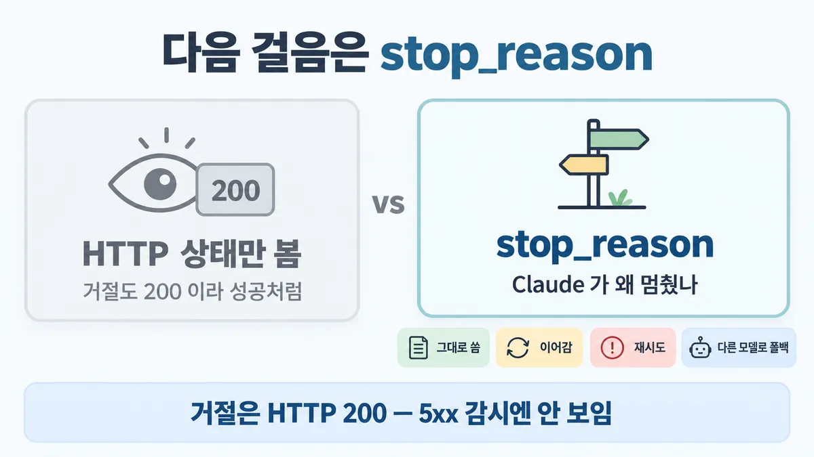
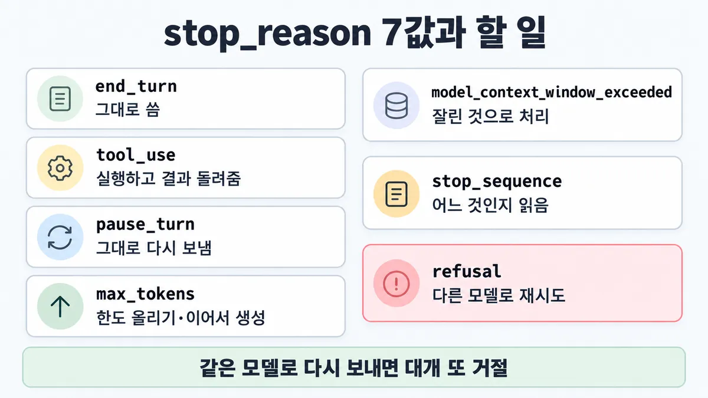
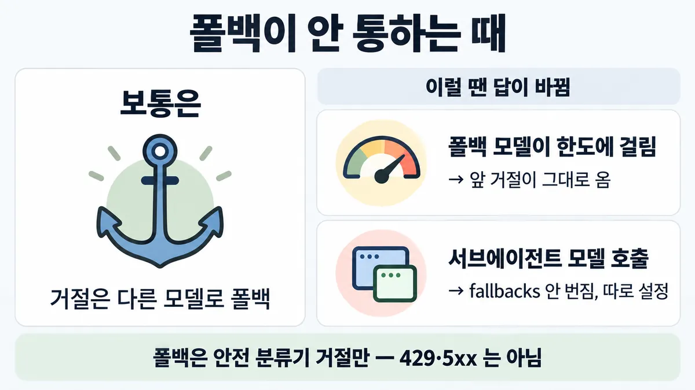

■ stop_reason 으로 분기
표시가 없는 문장은 공식 문서에서 확인한 내용이에요. 다른 표시는 읽는 법
왜 배우나 — 시험이 요구하는 것
시험 목표 1.2 입력부터 피드백까지 구조 설계 · D1 설계 17%Design end-to-end architectures (input → processing → output → feedback loops)
이 개념으로 푸는 판단 (할 수 있어야 하는 것)
- 1.2② 앱은 다음 단계를 무엇으로 아나? — 처리 루프를 무엇으로 제어하나 (stop_reason)
- 5.2② HTTP 200 인데 content 가 비었다 — 어떻게 처리하나? — stop_reason 으로 분기하고 거절을 처리하기
- 4.6③ 5xx 오류율은 0 인데 "답이 비었다" 는 신고가 는다 — 거절(refusal)을 따로 계측하기
- 7.3③ API 오류가 쏟아질 때 무엇부터 보나? — 오류 종류별 대응 (재시도할 것 / 한도를 볼 것 / 오류가 아닌 것)
한눈에
모든 응답에 stop_reason = Claude 가 왜 멈췄나. 앱은 HTTP 상태가 아니라 이 값으로 다음 걸음(그대로 씀 · 이어감 · 재시도 · 다른 모델로 폴백)을 정함
stop_reason 은 성공 응답 본문의 일부. 오류(4xx·5xx)는 요청 처리 실패로 따로 옴
비유 컨테이너 종료 코드(0 정상 · 137 OOM). "끝났다"만 보고 코드를 안 보면 OOM 을 놓침


ELI5
택배 기사가 문 앞에 쪽지를 붙이고 가는 것과 같아요.
- "배달 끝" 쪽지면 상자를 열면 돼요.
- "도장이 필요해요" 쪽지면 도장을 찍어 돌려줘야 다음 배달이 와요.
- "이 물건은 못 싣습니다" 쪽지가 붙어도 초인종은 똑같이 울려요.
- 그래서 초인종 소리만 듣지 말고 쪽지를 꼭 읽어야 해요.
개념 설명
원리
왜 따로 있나
- 오류(4xx·5xx) = 요청 처리가 실패함. stop_reason = 처리는 성공, 생성이 왜 멈췄는지. 둘은 다른 칸이라 HTTP 상태만 보면 stop_reason 이 말하는 걸 전부 놓침.
- 앱이 할 다음 걸음은 네 갈래 : 그대로 씀 · 이어감(tool_use · pause_turn · max_tokens) · 잘렸다고 표시 · 다른 모델로 재시도(refusal).
이어가는 세 값의 차이
tool_use: 내 도구를 기다림 → 내가 tool_result 를 보냄. 그 메시지엔 tool_result 만(뒤에 텍스트 붙이면 턴이 끝남).pause_turn: 서버 도구(웹 검색 등) 루프가 반복 한도(기본 10회)에 걸림 → 받은 assistant 콘텐츠를 그대로 돌려보냄. 내 도구가 기다리는 중이면 절대 pause_turn 이 아니라 tool_use.max_tokens: 내가 준 출력 한도에 걸림 → 한도를 올리거나 이어서 생성.model_context_window_exceeded는 창 자체를 채운 것 → 잘린 것으로 처리.
거절이 까다로운 이유
- 안전 분류기(Fable 5.1 · Fable 5 · Opus 5.5 · Opus 5)가 막으면 HTTP 200 +
stop_reason: "refusal"+ 빈content. 오류가 아니라서 오류율·5xx 감시가 못 봄. - 같은 모델은 대개 또 거절 → 다른 모델로 보내면 대개 답이 나옴. 그래서 처방 = 폴백.
stop_details.category는 분야 이름일 뿐 null 이 정상 값일 수 있음 → 분기 기준은stop_reason그 자체.- 폴백은 "요청의 속성" — 폴백을 안 단 경로(재시도 핸들러 · 백그라운드 워커 · 서브에이전트 호출)엔 폴백이 적용 안 됨.
핵심 질문 두 개
- 앱이 다음 걸음을 무엇으로 정하나 — HTTP 상태인가, stop_reason 인가?
- 거절이 나면 누가 보고, 어디로 다시 보내나?
규칙과 판단


갈림길
① 값별 할 일 [1.2②]
그대로 씀
자연 종료
실행하고 결과 돌려줌
tool_use 블록마다 tool_result 1개
그대로 다시 보냄
서버 도구 루프 반복 한도(기본 10회) → 받은 assistant 콘텐츠를 그대로 보내 이어감
한도 올리기 또는 이어서 생성
max_tokens 한도 도달 · 잘린 답엔 불완전하다는 안내
잘린 것으로 처리
모델 컨텍스트 창을 채움 · 불완전하다는 안내를 붙이거나 이어서 생성
어느 것인지 읽음
stop_sequence 필드
다음 물음 — 무엇으로 알아채나?
③④⑤ 거절 처리 [5.2②] [4.6③]
안 보임
오류율·5xx 기반 감시엔 안 보임
분기 X
category·explanation 은 null 일 수 있음
대개 또 거절
재시도는 다른 모델로
서버 측 fallbacks
한 번 왕복 · 베타
SDK 미들웨어
클라이언트에 한 번 설정
모아서 다시 제출
배치엔 서버 측 폴백 없음
⑤ 폴백 구멍 [5.2②] [7.3③]
안전 분류기 거절만
429·과부하·서버 오류는 그대로 돌아옴
앞 거절을 돌려줌
폴백 모델이 rate limit(속도 제한)·과부하면 폴백 안 하고 앞 거절을 돌려줌(recommended_model 힌트)
따로 설정
fallbacks 는 도구 실행 안의 모델 호출로 안 번짐
모든 요청 경로에
전역 플래그 말고 요청마다
흐름
그림 속 이름·금액·시간·토큰 수는 예시예요. 공식 한도·동작은 카드 본문 값이 기준.
장면 글로 보기
칸 : 앱 → 주 모델 → 폴백 모델 → 도구
규칙 (앱) : HTTP 상태가 아니라 stop_reason 으로 다음 걸음을 정함
질문 : 앱은 무엇을 보고 다음 걸음을 정할까?
① tool_use 루프 ✓
- 시작 : 앱 — 말 : “주문 #1042 어디쯤 왔어요?”
- 요청 : 앱 → 주 모델 — 쪽지 : user: 주문 #1042 어디쯤? / tools: [get_order]
- 멈춤 : 주 모델 → 앱 :
tool_use— 쪽지 : stop_reason: "tool_use" / get_order(1042) - 실행 : 앱 → 도구 : 도구를 실행하고 — 쪽지 : get_order(1042)
- 결과 : 도구 → 앱 — 쪽지 : 상태: "배송 중"
- 이어가기 : 앱 → 주 모델 : tool_result 만 담은 user 메시지 — 쪽지 : tool_result: / 상태: "배송 중"
- 답 : 주 모델 → 앱 :
end_turn이면 끝 — 쪽지 : stop_reason: "end_turn" / "지금 배송 중이에요" - 끝 : tool_use 면 실행하고 결과를 넣어 다시, end_turn 이면 끝
② 거절 → 다른 모델 ✓
- 시작 : 앱 — 말 : “(고객 문의 한 건)”
- 요청 : 앱 → 주 모델 — 쪽지 : model: Opus 5.5 / messages: 고객 문의
- 멈춤 : 주 모델 → 앱 : HTTP 200 + refusal — 쪽지 : HTTP 200 / stop_reason: "refusal" / content: []
- 재시도 : 앱 → 폴백 모델 : 같은 요청을 다른 모델로 — 쪽지 : 같은 messages / → 폴백 모델
- 답 : 폴백 모델 → 앱 — 쪽지 : stop_reason: "end_turn" / content: 답 본문
- 끝 : 폴백 뒤 대화는 폴백 모델에 계속
③ 200 이니 성공 ≠
- 시작 : 앱 — 말 : “(고객 문의 한 건)”
- 건너뜀 : 폴백 모델
- 요청 : 앱 → 주 모델 — 쪽지 : model: Opus 5.5 / messages: 고객 문의
- 멈춤 : 주 모델 → 앱 : HTTP 200 + refusal — 쪽지 : HTTP 200 / stop_reason: "refusal" / content: []
- 표시 : 앱 : 빈 답을 성공으로 보여 줌 — 쪽지 : 화면: 빈 답 / 5xx 알림: 0건
- 끝 : 오류율·5xx 감시엔 안 보임
나머지 규칙
-
tool_use 이어가기 : 다음 user 메시지 = tool_use 블록마다 tool_result 1개, 그 밖엔 아무것도 없이 · 같은
tools배열 유지 [1.2②]tool_result 뒤에 텍스트를 붙이면 assistant 턴이 끝남(기다리던 서버 도구가 있으면 400). 더 할 말은 턴이 끝난 뒤 별도 user 메시지로
pause_turn 은 클라이언트 tool_use 가 기다리는 응답엔 절대 안 옴 — 그땐 tool_use
에이전트 루프 = tool_use 면 실행·결과 넣고 다시, end_turn 이면 끝 (Skilljar)
-
배치 : 거절 항목은
result.type: "succeeded"+stop_reason: "refusal". 배치엔 서버 측 폴백 없음(fallbacks넣으면 항목별 오류) → 거절 항목만 모아 폴백 모델로 새 배치나 직접 요청 → ◆ Batch API vs 동기 호출 -
과금 : 출력 전 거절은
bio·frontier_llm·reasoning_extraction만 청구, 나머지 분류·null 은 무료 (2026-09-24 청구 재개 — 시험 뒤 변경) · 스트림 중간 거절은 입력 + 이미 나온 출력 청구 · 거절도 rate limit 엔 셈
규칙 원문 ①③④⑤ (갈림길로 그린 규칙)
-
값 7개와 할 일 [1.2②]
값 뜻 할 일 end_turn 자연 종료 그대로 씀 max_tokens max_한도 도달tokens 한도 올리기 또는 이어서 생성 stop_sequence 내 stop_중 하나가 나옴sequences stop_로 어느 것인지 봄sequence tool_use 도구 호출 실행하고 결과 돌려줌 pause_turn 서버 도구 루프 반복 한도(기본 10회) 받은 assistant 콘텐츠를 그대로 다시 보내 이어감 refusal거절 stop_읽고 폴백 모델로 재시도details model_context_ window_ exceeded 모델 컨텍스트 창을 채움 잘린 것으로 처리 잘린 답(max_tokens · 창 초과)은 불완전하다는 안내를 붙이거나 이어서 생성
스트리밍이면 stop_reason 은
message_start에선 null,message_delta에서 옴 -
거절 = HTTP 200 +
stop_reason: "refusal"·content비어 있음. 안전 분류기가 있는 모델 = Fable 5.1 · Fable 5 · Opus 5.5 · Opus 5 [5.2②]분기는
stop_reason(또는stop_details.type)으로.content나category·explanation으로 분기 X — 둘 다 null 일 수 있음(null 자체가 정상 값 — 나중에 채워질 자리표시가 아님).explanation은 보여 주기만, 파싱 X재시도는 다른 모델로. 같은 모델에 다시 보내면 대개 또 거절
스트림 중간 거절이면 부분 출력은 불완전 → 버림 · 폴백 뒤 멀티턴은 폴백 모델에 계속
-
거절은 따로 계측 : 오류율·5xx 기반 감시엔 안 보임 → 거절마다 이벤트 1개 · 폴백으로 처리된 응답마다 이벤트 1개, 두 수의 차이에 알림 [4.6③]
Claude Code 는 거절에
api_error가 안 뜨고claude_code.api_refusal이벤트 → ■ observability 세 신호 -
재시도 세 방법 [5.2②] [7.3③]
상황 방법 Claude API, 가장 간단 서버 측 fallbacks(베타) — 한 요청 한 응답모든 플랫폼, Anthropic SDK SDK 미들웨어 — 클라이언트에 한 번 설정 raw HTTP · 직접 짠 재시도 직접 재시도 + fallback credit(프롬프트 캐시 값 두 번 안 냄) "default"모드 = 거절 분류별 권장 폴백 모델로 재시도, 권장이 없는 분류는 거절 그대로 (2026-07-24 추가 — 시험 뒤 변경일 수 있음)폴백은 안전 분류기 거절만. 429·과부하·서버 오류는 그대로 돌아옴 → ■ rate limit
폴백 모델이 rate limit·과부하면 폴백 안 하고 앞 거절을 돌려줌(
recommended_model힌트)구멍 막기 : 모든 요청 경로(재시도 핸들러 · 오류 복구 분기 · 백그라운드 워커)에 · 서브에이전트 호출엔 따로 · 전역 플래그 말고 요청의 속성으로 · 재시도 예산은 요청 단위
더 깊이 : 판단 규칙 · 상황 변수 (설명)
판단 규칙
| 조건 | 답 | 근거 |
|---|---|---|
| 응답을 받음 | HTTP 상태가 아니라 stop_ 으로 분기 | handling-stop-reasons |
tool_ | 도구 실행 → tool_use 블록마다 tool_result 1개, 그 메시지엔 tool_result 만 · 같은 tools | handling-stop-reasons |
pause_ | 받은 assistant 콘텐츠를 그대로 다시 보내 이어감 | handling-stop-reasons |
max_ · model_ | 잘린 것 → 안내 붙이기 또는 이어서 생성 · max_tokens 는 한도 올리기도 | handling-stop-reasons |
refusal | stop_ 으로 감지 → 다른 모델로 재시도 | refusals-and-fallback |
| 거절 재시도, Claude API 에서 가장 간단히 | 서버 측 fallbacks(베타) | refusals-and-fallback |
| 거절 재시도, 여러 플랫폼 + Anthropic SDK | SDK 미들웨어 | refusals-and-fallback |
| 거절 재시도, raw HTTP | 직접 재시도 + fallback credit | refusals-and-fallback |
| 배치 항목이 거절됨 | 모아서 폴백 모델로 새 배치 또는 직접 요청 (배치엔 서버 측 폴백 없음) | refusals-and-fallback |
| 거절 감시 | 거절 이벤트 · 폴백 처리 이벤트를 따로 세고 차이에 알림 | refusals-and-fallback |
| 스트리밍에서 stop_reason 읽기 | message_ 이벤트에서 (message_ 에선 null) | handling-stop-reasons |
상황 변수
| 변수 | 값 | 답 쪽 | 등급 | 근거 |
|---|---|---|---|---|
| 감시 기준 | HTTP 오류율 · 5xx 만 | 거절을 못 봄 → stop_reason 분포를 따로 셈 | refusals-and-fallback | |
| 감시 도구 | Claude Code OTel | 거절은 api_ 가 아니라 claude_ 이벤트 | monitoring-usage | |
| 실행 모델 | Fable 5.1 · Fable 5 · Opus 5.5 · Opus 5 | 안전 분류기 거절이 올 수 있음 → 폴백 필수 | refusals-and-fallback | |
| 실행 모델 | 위 네 모델 밖 | 두 문서는 네 모델만 적음 | 미해결 | 미해결 1 |
| 실행 방식 | 동기 · Claude API | 서버 측 폴백 가능 | refusals-and-fallback | |
| 실행 방식 | Message Batches | 서버 측 폴백 없음 → 거절 항목만 다시 제출 | refusals-and-fallback | |
| 호출 구조 | 에이전트 + 서브에이전트 | 서브 호출에 따로 폴백 · 재시도 예산은 요청 단위 | refusals-and-fallback | |
| 폴백 모델 상태 | rate limit(속도 제한) · 과부하 | 폴백 시도 안 함, 앞 거절 반환 + recommended_ | refusals-and-fallback | |
| 실패 종류 | 429 · 529 · 5xx | 폴백 대상 아님 → 재시도·백오프 쪽(■ rate limit) | refusals-and-fallback · errors(529 = 과부하) | |
| 거절 시점 | 스트림 중간 | 부분 출력은 버림 · 입력 + 나온 출력 청구 | refusals-and-fallback | |
| 거절 분류 | bio · frontier_ · reasoning_ | 출력 전 거절도 청구 | refusals-and-fallback (2026-09-24 재개) |
연습 문제
고객지원 채팅 앱이 Anthropic SDK 로 Opus 5.5 를 부르고, Claude API 말고 다른 클라우드 플랫폼에도 같은 앱을 올린다모든 플랫폼. 어떤 문의에 HTTP 200 인데 stop_reason 이 "refusal" 이고 content 가 빈 응답refusal이 왔다. 담당자는 "같은 요청을 같은 모델로 한 번 더 보내자"고 한다. 어떻게 처리할까?
시험 대비
함정
- "HTTP 상태 코드로 실패·거절을 잡음" → 거절은 HTTP 200
- "5xx 알림 임계값을 낮춤" → 거절은 5xx 가 아님, 따로 셈
- "
stop_details.category로 거절을 분기" → category 는 null 일 수 있음,stop_reason으로 - "같은 요청을 같은 모델로 재시도" → 대개 또 거절, 다른 모델로
- "refusal = 끝, 빈 답 그대로 사용자에게" → 다른 모델로 대개 답을 얻음
- stop_reason 을 5개로만 알아 '컨텍스트 창이 가득 차 멈춤' 보기를 버림 → 7개,
model_context_window_exceeded있음 - "
pause_turn= 오류, 새 요청으로" → 받은 assistant 콘텐츠를 그대로 보내 이어감 - "폴백을 켜면 429·5xx 도 다른 모델로" → 안전 분류기 거절만
- tool_result 와 같은 메시지에 추가 지시 텍스트 → 턴이 끝남, 별도 user 메시지로
신호
"Every Messages API response includes a stop_reason field that tells you why Claude stopped generating."
"Run the tool and return the result."
"Safety classifiers return this stop reason as a normal HTTP 200 response, not an error."
"Re-sending a refused request to the same model usually earns another refusal."
"A refusal is an HTTP 200, so monitoring built on error rates or 5xx responses never sees it."
"Only a safety classifier decline triggers the fallback."
"Check for stop_reason equal to "refusal" directly."


더 깊이 : 뒤집히는 때 · 오답 재료 (설명)
뒤집히는 때
1. "출력 전 거절은 공짜"가 분류 따라 뒤집힘
- 조건 : 2만 5천 토큰 요청이 Fable 5.1 에서 출력 전에 거절됨.
- 계산 : 분류가
cyber면 $0. 분류가bio면 25,000 × $10 / 1M = $0.25. 폴백(Opus 4.8)은 따로 25,000 × $5 / 1M = $0.125 + 출력. - 전제 : 캐시 없음 · 가격 = 2026-09-28 조회값(ko-pricing) · 폴백 쪽 출력 토큰은 뺌.
- 등급 : 계산 (청구 분류는 확인). 2026-09-24 전엔 출력 전 거절이 모두 무료였음(릴리스 노트, 2026-06-02) → 시험(2026-07 기준)은 "출력 전 거절은 과금 안 됨"으로 물을 가능성.
- 근거 : refusals-and-fallback · 릴리스 노트
2. 폴백을 켰는데도 거절이 그대로 옴
- 조건 :
fallbacks설정. 부하가 몰려 폴백 모델이 rate limit 에 걸림. - 판단 : 폴백 시도를 건너뛰고 앞 거절을 돌려줌.
stop_details.recommended_model이 직접 재시도할 모델을 힌트로 줌(보장 아님). "폴백 켰으니 거절 0" 가정이 깨짐 → 폴백 모델의 rate limit 을 예상 거절량에 맞춰 잡음. - 근거 : refusals-and-fallback
3. 서브에이전트에서만 빈 답
- 조건 : 메인 호출엔
fallbacks가 있고, 도구 실행 안에서 부르는 서브에이전트 모델 호출엔 없음. - 판단 :
fallbacks는 도구 실행 안의 모델 호출로 안 번짐 → 그 호출에 따로 설정. 한 턴에 거절이 여러 번(에이전트 + 서브에이전트) 날 수 있으니 재시도 예산도 요청 단위. - 근거 : refusals-and-fallback
4. max_tokens 로 멈춤 — 한도만 올리면 되나
- 조건 : 분류 답이 중간에 끊기고 stop_reason =
max_tokens. - 판단 : 한도 올리기 또는 이어서 생성 둘 다 공식 처방. 입력 크기를 몰라 최대치를 원하면 컨텍스트 창 끝까지 쓰게 두고
model_context_window_exceeded로 받는 길도 있음. 비스트리밍 10분 제한·스트리밍 전환은 이 카드 밖(4.5 쪽). - 등급 : (처방) · 업계 일반 (어느 쪽을 먼저 고를지)
- 근거 : handling-stop-reasons
오답 재료
| 오답 | 왜 끌리나 | 왜 틀리나 | 근거 |
|---|---|---|---|
| "HTTP 상태 코드로 실패·거절을 잡는다" | 보통 API 는 실패를 상태 코드로 알림 | 거절은 HTTP 200. stop_reason 은 성공 응답 본문의 일부 | handling-stop-reasons |
| "5xx 알림 임계값을 낮춘다" | 빈 답 = 장애로 보임 | 거절은 5xx 가 아님 → 임계값을 바꿔도 안 잡힘 | refusals-and-fallback |
| "같은 요청을 같은 모델로 재시도" | 일시 오류처럼 보임 | 대개 또 거절. 다른 모델로 | refusals-and-fallback |
| "refusal = 안전 거절로 끝, 빈 답을 사용자에게" | 안전 판단이니 존중해야 할 것 같음 | 다른 모델로 대개 답을 얻음. 공식 처방 = 폴백 | refusals-and-fallback |
"stop_ 를 읽어 분기" | 분야별 처리가 세밀해 보임 | category·explanation 은 null 일 수 있음 → stop_ 으로 분기 | refusals-and-fallback |
| '컨텍스트 창이 가득 차 멈춤' 보기를 "그런 값 없음"으로 버림 | stop_reason 을 5개로만 외움 | 7개. model_ 있음 | handling-stop-reasons |
"pause_ 은 오류 → 처음부터 새 요청" | '멈춤'이라는 이름 | 받은 assistant 콘텐츠를 그대로 보내 이어감 | handling-stop-reasons |
| "폴백을 켜면 429·서버 오류도 다른 모델이 받아 줌" | 폴백 = 장애 조치로 보임 | 안전 분류기 거절만 폴백. 나머지는 그대로 돌아옴 | refusals-and-fallback |
| "tool_result 와 같은 메시지에 '이제 요약해' 텍스트를 붙임" | 한 번에 보내면 왕복이 줄어 보임 | 턴이 끝남(기다리던 서버 도구가 있으면 400). 턴이 끝난 뒤 별도 user 메시지로 | handling-stop-reasons |
| "assistant 문장('완료했습니다')으로 루프 종료 판정" | 사람 읽기엔 분명함 | 루프는 stop_reason 으로 — end_turn 이면 끝 | Skilljar p101 486254 |
참고
CCA-F
겹침 (에이전트 루프 — tool_use 면 한 번 더, end_turn 이면 끝 · 완료를 assistant 문장으로 판정 X) — 여기선 7값 전부의 처리와 거절(HTTP 200)을 설계·감시·폴백 경로 관점에서 물음
출처
- 가이드 목표 1.2 공식 시험 가이드 v1.0
- docs handling-stop-reasons
- refusals-and-fallback
- monitoring-usage
- 릴리스 노트
- Skilljar Platform 101 486254
상태
- 시험 뒤 변경 2곳(⑤ `"default"` 모드 · ⑦ 거절 청구 재개)
미해결
- 안전 분류기 거절 문서 두 개는 Fable 5.1 · Fable 5 · Opus 5.5 · Opus 5 만 적음. 그 밖 모델(Sonnet 등)이
refusal을 내는지는 이 파일들에 없음 — 릴리스 노트이 가리키는 streaming refusals 문서는 안 받음. fallbacks의"default"모드는 2026-07-24 추가(릴리스 노트). 시험 가이드 기준(2026-07)에 들어갔는지 모름 → 시험은 "다른 모델로 재시도" 원칙만 물을 가능성(추론).- 목록 5.2② 는 "refusal 이면 stop_details(category·explanation)를 읽고" 였음 → 공식은 분기를
stop_reason(또는stop_details.type)으로 하라고 하고 category·explanation 은 null 가능(refusals-and-fallback). 카드엔 고친 쪽만. - 목록 1.2② 의 "Part 17 팁이 오답으로 짚은 모양" · 5.2② 의 "영상 목록 5개"는 영상 쪽 기록이라 원문 대조 안 함(영상 파일 안 봄).
- handling-stop-reasons 의 코드 예시(항상 확인 · pause_turn 재시도 · 이어서 생성)는 받은 파일에서 코드 블록이 빠져 있음( 뒤가 빈 절).